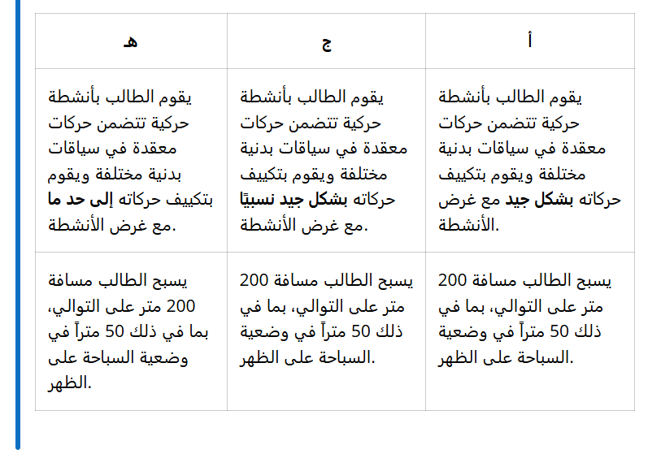

مقدمة
إن عدم القدرة على السباحة بشكل كافٍ قد يُهدد الحياة. لذا، يمنحك سباح ماهر شعورًا بالأمان في الماء. فالسباح الماهر يعني أنه يمكنك السقوط في الماء وغمر رأسك تحت السطح، وبعد الوصول إلى السطح في المياه العميقة، يمكنك السباحة لمسافة 200 متر، منها 50 مترًا على ظهرك.
بإتقانك السباحة، ستشعر بالثقة في المياه العميقة، وستصبح السباحة أكثر متعة. إذا تعلمت عدة أنواع مختلفة من السباحة، ستصبح أكثر قدرة على إنقاذ الأرواح والتعامل مع حالات الطوارئ في الماء. كما ستكون السباحة أكثر متعة، إذ يمكنك تنويع مهاراتك بطرق مختلفة.
قضية:
- تعلم ضربة واحدة على الأقل من السباحة على البطن
- تعلم السباحة على ظهرك باستخدام تقنية السباحة على الظهر المنقذة للحياة
-
أن يكون قادرًا على السباحة لمسافة 200 متر، منها 50 مترًا ع
لى الأقل في وضع السباحة على الظهر - لتعلم كيفية البقاء على قيد الحياة في الماء.
المحتوى المركزي
يغطي القسم المحتوى الرئيسي التالي:
- الحركات المعقدة في الألعاب والرياضة والأنشطة البدنية الأخرى، في الداخل والخارج.
- أدوات مختلفة، بما في ذلك الأدوات الرقمية، للتخطيط وتنفيذ وتقييم أنشطة الحركة.
- أنماط مختلفة للسباحة في وضعية الانبطاح والظهر.
معايير التصنيف
المفاهيم في هذا القسم
- مهارات السباحة
- مستوى الماء
- سباحة الظهر المنقذة للحياة
- الزحف إلى الخلف
- زحف
- فراشة
- معادلة الضغط